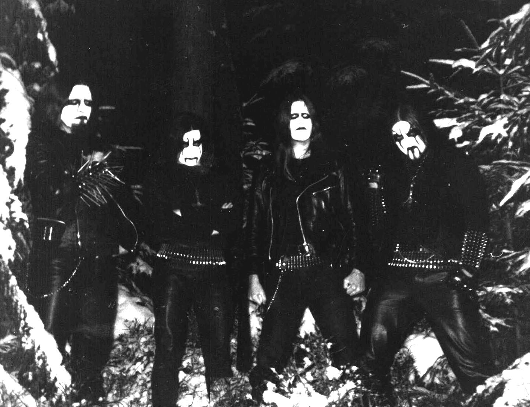
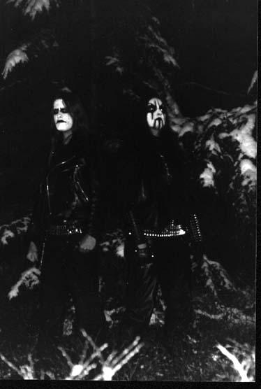
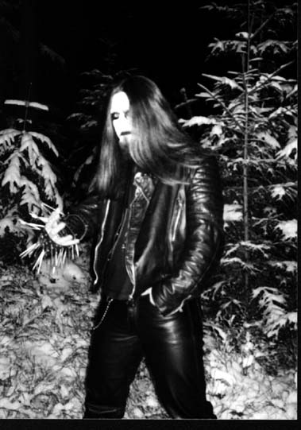

Seeds
Of Hate
Seeds
Of Hate
Семена Ненависти… – то драгоценное, что, упав в подготовленную почву, способно вырасти во что-то действительно ужасное и гибельное для этого мира. Ненависть наполняет этот мир, его грезы и его реальность.
Каковы грезы того, кто говорит о себе, как о сеятеле Ненависти? Какова его реальность?
«…миром правит Тьма и Хаос. Люди бегут и кричат»… Можно спокойно «сидеть на троне и смеяться», получая долгожданное удовольствие от происходящего.
CONTRA DEI: Как образовалась ваша группа? Расскажи о планах группы на будущее. Какими альбомами представлено творчество Seeds Of Hate?
Adrastos: Группа Seeds Of Hate была основана в начале 1997 при участии Periophas (гитара), Hagen (гитара), Romi (барабаны) и меня – Adrastos (вокал). Через несколько недель Hagen покинул группу, и свое первое demo мы записывали усилиями оставшихся музыкантов. Происходило это в конце 1997 года. Вслед за этим вновь последовали изменения в составе. Мы избавились от Romi и взяли на его место Winterblut, а также нового гитариста Atazrael. Наше новое demo «Franconia» вышло в середине 1998. И вновь состав претерпел изменения. Нас покинули Winterblut, Atazrael и Periphas. Несмотря на это, я написал несколько новых песен и нашел нового барабанщика в лице Tondhorn. Вместе с ним мы собрали материал для третьего demo «Satanic Legions», и как только он был готов, к нам присоединились Ineluki и Akhenaten. Мы выпустили это demo в мае 2000. В конце того же года мы впервые сыграли свой концерт и обзавелись басистом SM-Daemon. Запись нашего живого выступления была выпущена в формате МС тиражом 300 копий усилиями Chanteloup Creations. В 2001 мы выпустили свой первый CD, после чего расстались с Ineluki. Наш текущий состав имеет следующий вид: Adrastos, Dawn of Armageddon, SM-Daemon и Tondhorn. Возможно, в будущем к нам присоединится наш хороший друг. Поживем – увидим.
В наших планах на будущее – сыграть много концертов и выпустить много альбомов.
 CD:
Германская black metal сцена – одна из сильнейших. Какие из групп ты считаешь
своими коллегами? Есть ли те, кто наоборот достоин твоего презрения?
CD:
Германская black metal сцена – одна из сильнейших. Какие из групп ты считаешь
своими коллегами? Есть ли те, кто наоборот достоин твоего презрения?
A: Согласен с твоим утверждением о Германском black metal. Но здесь так же много дерьмовых бездарей, которые не достойны того, чтобы их имена были упомянуты. Группы, которые мне нравятся: Empaligon, Skalder, Secrets of the Moon, Dark Fortress, Eternity, Legion of Sadism, Mightiest, Sterben, Obsidian, Nargaroth и Trimonium.
CD: В работе над записью вашего demo 2000 вам помогал Akhenaten. Как вы с ним встретились? Будет ли он вам помогать впредь? Станет ли он одним из Seeds of Hate?
A: Я познакомился с ним в 2000 и попросил его помочь, если он не будет против. Тогда он дал согласие, и сегодня Akhenaten наш хороший друг. Но сейчас место гитариста Seeds of Hate занимает другой – Dawn of Armageddon. Проблема в том, что многие считали нашу группу сайд-проектом от Judas Iscariot. Нам пришлось изменить ситуацию.
CD: Что можешь сказать на то, что black metal потерял свою суть и превратился в средство заколачивания денег? И первыми, кто предал идею, были норвеги?
A: В моих глазах, все эти группы, наживающиеся на идее, не имеют ни какого отношения к black metal. Я говорю сейчас о таких группах, как: Dimmu Borgir, Satyricon, Emperor, Immortal…Они преподносят слушателю высококачественный metal с b/m вокалом и используют corpsepaint. Настоящий, истинный black metal по прежнему в андерграунде. Но все же жаль, что все эти вышеперечисленные старые группы играют сегодня такое дерьмо. Очень дико видеть группы типа Immortal на больших металлических фестивалях, таких как Wacken или With Full Force. Но black metal не для хреновых фестивальных вечеринок!
CD: Seeds of Hate – группа сатанинской направленности. Что Cатанизм означает для тебя?
A: Не все участники группы сатанисты. Я считаю, что сатанизм сугубо индивидуален. Я вижу в нем власть и множество чувств. Это определенно не резание кошек под крики «Слава Сатане»…
Я живу, практикуя Сатанизм в качестве моего философского мировоззрения. Это то, что есть в моем сердце, в моей душе и в моем духе. Это – сила внутри меня. Я не стану распространяться о ритуалах и о том, что с этим связано. Достаточно того, что вам уже известно...

CD: Кто есть Дьявол в твоем понимании?
A: Дьявол – символ и синоним всего Зла, Тьмы и Ненависти. Я не думаю, что Он имеет что-либо общее с козлом, которым его изображают. Козел – всего лишь символ.
CD: Тьма и Хаос. Твои ощущения этого?
A: Я вспоминаю свой сон, свое видение: миром правят Тьма и Хаос. Люди бегут и кричат, а я сижу на троне и смеюсь.
CD: Антихристианство и Сатанизм… Многие понимают это как одно и то же, когда находят удовольствие в примитивном богохульстве. Каково твое мнение?
A: Сходство этих путей в том, что оба они направлены против христианства. Я знаю многих, кто ненавидит идеологию христиан и их самих, но при этом не имеет отношения к сатанизму. Как пример – группы, продвигающие языческий black metal. Они ненавидят христианство, но в их творчестве ты не встретишь ничего, имеющего отношения к сатанизму.
CD: Кто из писателей является для тебя авторитетом? Любишь ли ты читать?
A: У меня абсолютно нет времени для чтения.
CD: Твое отношение к следующим персонам: А. Кроули, Ф. Ницше, А. С. ЛаВей?
A: Я знаком с некоторыми работами каждого из них. Персона Ницше достаточно интересна.
CD: Христианская мораль – мораль слабых. Так говорят многие. Но какой может быть, по твоему мнению, борьба со слабыми? Как на счет того, чтобы выбрать противника по силам? Какова твоя высшая задача, цель твоей войны?
A: Наша высшая цель – борьба против христианства, человечества и их бога, а также почитание Сатаны. Мы хотим сеять ненависть и агрессию!!!
CD: Экстремизм…Как ты считаешь, приемлем ли он для тех, кто идет Путем Тьмы? Это сугубо внутреннее самоощущение или же оно должно иметь и внешнее проявление, а также воздействие на окружающее? Как это воздействует на того, кто принадлежит Темной стороне?
A: Иногда на самом деле очень трудно одновременно быть вовлеченным в культ black metal и совершать обычные повседневные действия, ходить на работу, влачить обычное существование. Я думаю, что большинство экстремистов от black metal живут двойной жизнью, при этом являясь «обычными людьми» и обращаясь в демонических существ…
CD: Что ты предпочитаешь – теорию или практику? Возвращаясь к теме экстремизма, поддержал бы ты войну, если бы ты мог ее спонсировать? Хотелось бы тебе быть в ней генералом? Против кого была бы эта война?
A: Я бы поддержал любую войну. Уничтожайте жизнь! Уничтожайте человечество! Мне ближе конкретное действие, но не хотелось бы оказаться за решеткой в то же время.
CD: Что ты вообще думаешь об окружающем мире? Это место для жизни или для борьбы?
A: Не подумай, что я настроен суицидально и собираюсь себя прикончить в этот самый момент, но этот мир – дерьмовый. Я ненавижу большее количество людей, населяющих эту планету. Это просто моя мечта – убить 95% человечества и разрушить их современные жилища.
CD: Законы этого мира и законы бога, могут ли они препятствовать сильному?
A: Думаю, что это так. Можно попасть в тюрьму гораздо быстрее, чем успеешь опустошить упаковку пива, если ты совершил что-то незаконное.
CD: Самоубийство..?
A: В некоторых случаях самоубийство это – признак слабости. Но есть много неотвратимых и правильных причин прикончить себя. Когда придет мой черед, я прикончу себя самым зверским способом. Но я не собираюсь делать этого, по крайней мере, еще несколько лет. Многое нужно сделать. И есть война против христианства и человечества, которую нужно продолжать.
CD: Как ты думаешь, твое тело это и есть ты сам, или же это поле битвы или, возможно, даже инструмент?
A: Мое тело – скорее инструмент для поклонения Сатане, Тьме и распространения ненависти!
CD: Ненависть…Может быть она созидательной?
A: Да, конечно. Большинство песен и риффов я написал, вдохновленный ненавистью. Я живу с ненавистью каждый день моей жизни. Я особенно в ее власти, когда сталкиваюсь с обывателями и их влиянием. Ненависть помогает мне выжить и вдохновляет меня.
CD: Не мог бы ты прокомментировать причину своей ненависти к человечеству?
A: Я ненавижу большую часть этого племени потому, что в основной своей массе люди – подверженные предрассудкам, поверхностные, глупые и утомительные существа. Круг их интересов включает в себя в основном дорогие автомобили, телевидение, деньги…Мне не нравится стиль одежды обывателей. Мне не нравятся темы их общения. Во всем этом заключено большее количество причин моей ненависти к ним. Кстати, они также ненавидят меня/нас. Мы производим на них шокирующее впечатление: длинные волосы, черная одежда…Мы не похожи на них. Они ничего не знают о нас. Они ничего у нас не спрашивают. Мы просто им не нравимся. И так лучше для них же самих.
CD: Жизнь после смерти…
A: Возможно, она есть. Надеюсь, что это не так.
CD:Благодарим за ответы. Ваши заключительные слова…
Adrastos: Благодарю за интервью. Особый привет Lugubre, Urgehal, Church, Roter и всем из Festung.
Сейте повсюду семена ненависти!!!!